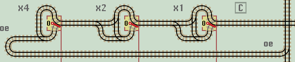
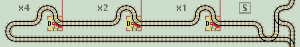
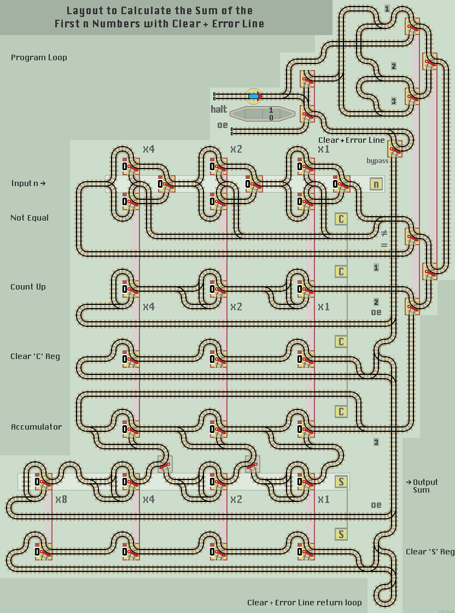

Clear & Error Line
So far, computer layouts hane no no mechanism to clear all registers at the start of a program. This is important for consistent and correct results in a practical layout.
Register Clear
This function sets all lazy points to 0 thus resetting linked data register points to '000'. The engine exits on the same track.

|
However, we don't want to waste valuable MUX lines with Clear functions which are used only once per computation. Likewise, we don't want to reserve many MUX lines for returning overflow errors.
An efficient solution is to combine the two requirements into a single dedicated line. This 'Clear & Error' line runs vertically beside every function. It links all functions needing an initial clear instruction and also all functions which may need to return an overflow error.
Clear & Error Line
This vertical track allows a descending 'clear' instruction to be passed into each function in turn before returning to the main program area. However, once the main program is running, any 'errors' produced by a function, are passed unhindered up the line to the 'error' siding where the train stops.
Here is a Counter function with a Clear and Error line. The circuit on the right allows a descending train to be passed into functions as necessary. A simple loop at the bottom returns the train back along the same track.
|  |
|  |
 |
Just one final bit of circuitry. We have to separate a returning Clear instruction from any later returning Error instructions. A Clear & Error circuit is needed.
From the Halt siding, the train passes through the lower lazy point and switches the double linked point to 0. It then passes down the Clear & Error line. Once registers are cleared, the train returns and is directed to the upper lazy point, where it switches the double linked point to 1, before proceeding to the main program loop. |
|
Any further train returning via the 'Clear & Error' line is an overflow error and is correctly directed to the 'Error' siding.
Just in case you are impatient and use the web page 'reload' button to reset all points, a manual 'bypass' switch is provided. This prevents the train from clearing registers at start up. Any overflow errors are returned as normal.
The bypass switch also allows the nth term to be raised and the calculation continued after the train has halted. Or the Sum register to be manually cleared to find the Sum over a range of terms.
| 
|
| Click layout to pause/run train | Click points to switch 0/1 | Click start circle to reset train/points |
| Lazy points switch between upper 0 or lower 1 branch lines Trains arriving on a branch line switch the point to that line |
|
| Sprung points allow branch line trains to join the main line All main line trains go straight ahead and never 'branch off' |
How it works
The train will traverse the layout without intervention. Each return to the main program loop will yield the next triangular number in the lower sum Register S.
Eventually, when the Count equals the requested nth term, the comparator circuit will return the train to the 'halt' siding where the train will stop as it hits the buffers. The nth triangular number can be read in the lower Sum S register. This layout will produce an overflow error for the 6th and 7th terms.
One problem with the Not Equal function is if the Count is higher than n then the layout does not detect an error has occoured and carries on calculating. Therefore, it is better to use the Comparator function. This will halt the train if Count is greater than or equal to n.
Also, the Clear and Count Up functions can be combined into one Count and Clear function.
Modular Functions
Multiplex circuitry and a 'Clear & Error' line may seem over complex for a circuit to produce the first few triangular numbers. However, such circuits are necessary as layouts increase in size and complexity. Also, the modular arrangement of functions enables easy circuit expansion and allows more functions to be easily added enabling different programs to be run.
Increasing the register size by adding more stages will allow larger numbers to be computed. Each register can be extended indefinitely to the left. Not all registers need to be the same size. For instance, an 8-stage S register would allow the 255th triangular number of 32,640 to be computed.